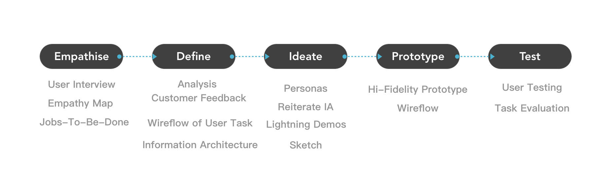
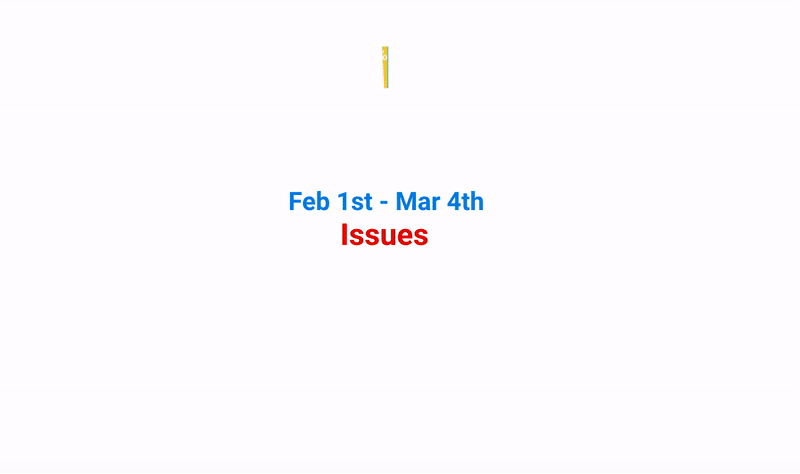
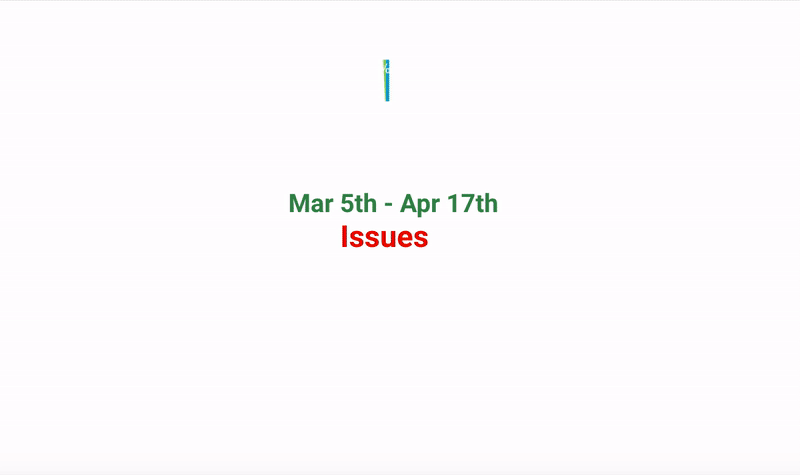
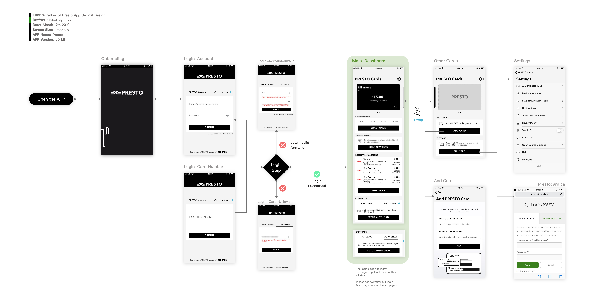
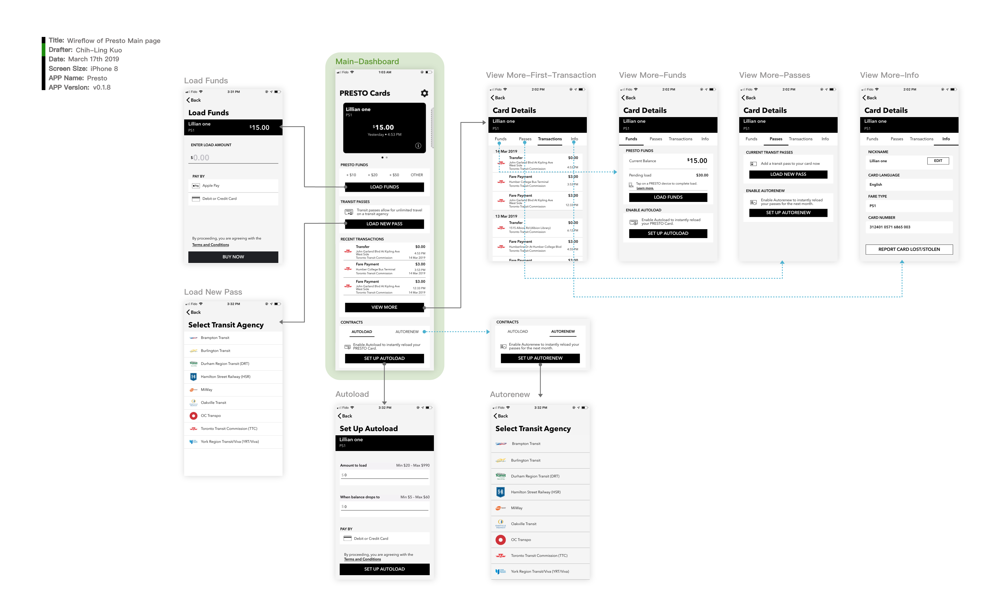
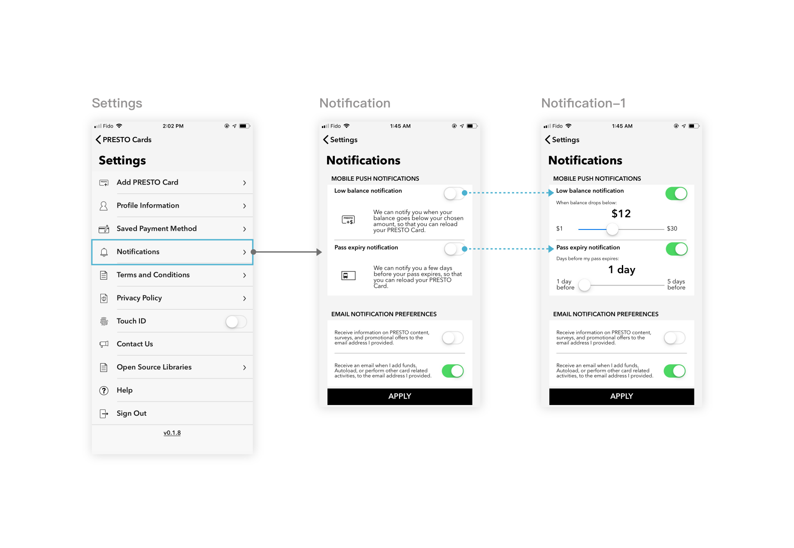
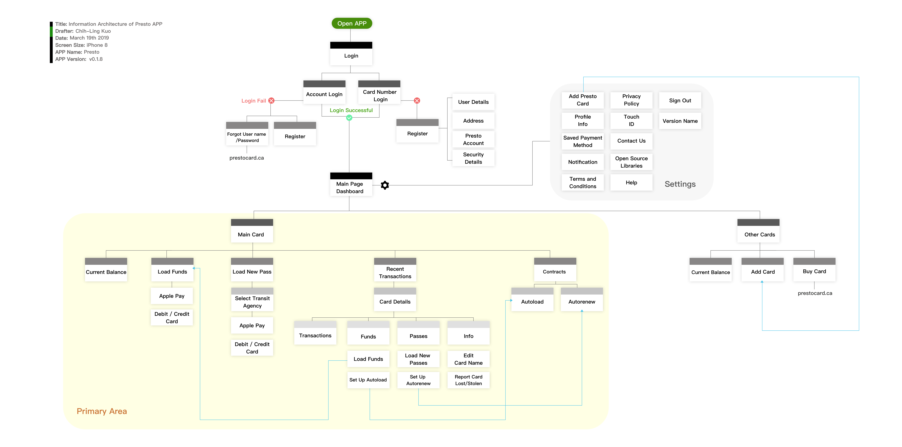
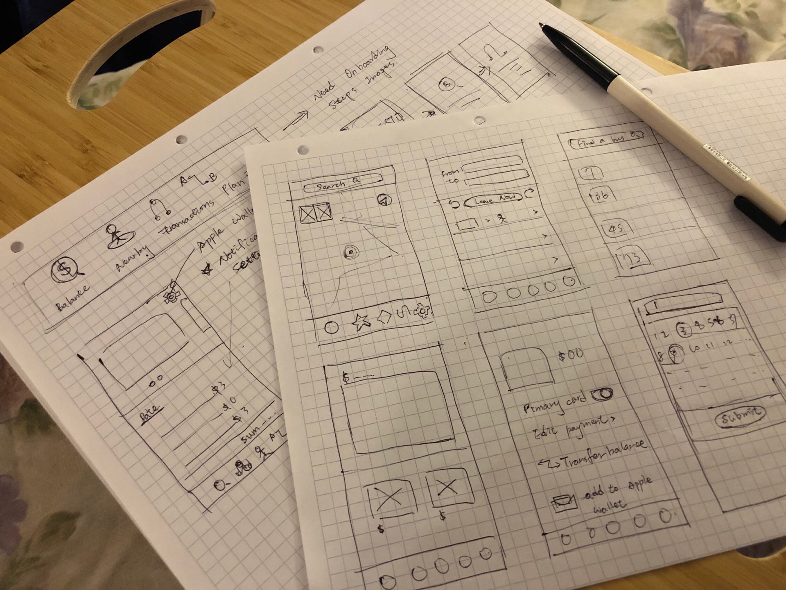
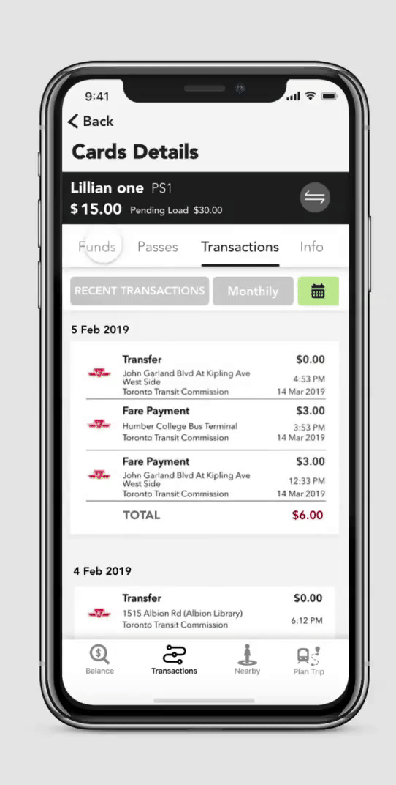

What is PRESTO?
PRESTO is an electronic payment system that eliminates the need for tickets, tokens, passes and cash and works in Greater Toronto and Hamilton Area (GTHA) and Ottawa.- Retrive from Presto offical site
Designer
Chih-Ling Kuo
DATE
March-May 2019
TASK
Redesign Presto Card App
Toronto releases the Presto App to allow the user to check and reload the balance by using the phone.
Nevertheless, when I am using this App and Presto system, a bunch of ideas comes up.
SKILL
User Interview
Empathy Map
Jobs-To-Be-Done
Analysis Customer Feedback
Information Architecture
Personas and User Journey Map
Wireflow of User Task
User Testing
My Experience of PRESTO Card
Before I was heading to redesign the Presto APP, I faced some inexpedience while using the Presto.
As a Presto user, I know I can reload the funds in three ways. Using the Self-Serve Reload Machine in subway stations, go to the official site, or using the APP.
My house is far from the subway station, and I don't pass by the station in my usual daily route.
Therefore, I prefer using the official site or App to reload the card.
However, when I use the site or the App to load the funds, they take 4-24 hours to add your money into card. Maybe you think four hours is not a big deal, but when you faced that you're in a hurry and finally get on a bus. Beep! Your card doesn't have enough funds. You'll realize why four hours is a problem.
Secondly, as a Presto App user, the balance is not real-time, I still remember one time, I received the low balance notification AFTER I reloaded my card already.
Furthermore, the first time I used the App to reload funds, I thought my money was gone and didn't go to my balances, the APP doesn't show me the pending funds on the main page, then, I tap the Funds section, I finally saw the pending funds.
Thirdly, when you have two bags in your hands after the grocery shopping, you'll hate to dig out your Presto card from the backpack.
To sum up, I need an efficient way to check, reload the balance and tap my card.

Official Presto App -My Account
Despite showing balance on the App...

Redesign Pay Fare Machine- Chihling
How might we showing the card balance on the Pay Fare machine?
If there have difficulty and technical issues to provide real-time data on the APP currently, then why not present the real-time balance directly?
Showing balance when users tap their card, that is the quickest way to make users know the current balance.
Okay, don't leave. I'm going back to our main topic — Redesign the App.
PROCESS
Empathise
User Interview

Empathy Map of one App User
In the Empathise stage, I decided to ask my friend sharing their presto experience to me. However, only two out of five are using the Presto App. Three out of five use the self-reload machine to reload the monthly pass or funds. Two of them also experienced the website reload system. One of the Presto App users says, since she used the APP, she doesn't use the site anymore.
I realized, for the monthly pass users, they don't have demands to use the App, because they only necessitate reloading card once within a month. It makes me wonder if Presto App wants to make more people be involved, it needs to increase some characteristics, which makes even a monthly user have the desire to use.
Jobs-To-Be-Done Interview
I decide to choose the user, who experiences both official Presto site and App, as my Jobs-To-Be-Done Interview participant.
Jobs-To-Be-Done
A Job to be Done is the process a consumer goes through whenever she aims to change her existing life-situation into a preferred one, but cannot because there are constraints that stop her. — Alan Klement

Jobs-To-Be-Done Timeline

Force Diagram

Jobs Statement
Undeniable, Presto App offers the user a convenient way to reload funds anywhere, anytime and allows iPhone user to use Apple pay instead enter the credit card numbers.
Define
Analysis Customer Feedback
In the define stage, I want to know more users experience and explore more issues of Presto App. I think viewing the reviews from the App store is the quickest way for me to catch more problems from other users.
I read around 300 reports of Feb 1st to Apr 7th.
Due to the Presto release the new version on Mar 4th. Therefore I break the reviews in two charts to clarify the difference between before and after.

Reviews of Presto App from Apple Store
Reviews of Feb 1st - Mar 4th

Reviews Chart - Feb to Mar
Top Five Issues:
1.Stock on the loading page or wait a long time. Not work well with wifi of subway station. -29%
2.Wants to use Presto by tap phone. i.e Put in the apple wallet. -20%
3.Unsatisfied for loading funds to the card needs to wait 4-24 hours -15%
3.Not real-time to show the card balance and transactions. -15%
5.Have issues to sign in, verify the email account, and activate card. -4%
Reviews of Mar 5th - Apr 7th

Reviews Chart - Mar to Apr
Top Five Issues:
1.Unsatisfied for loading funds to the card needs to wait 4-24 hours -33%
2.Wants to use Presto by tap phone. i.e Put in the apple wallet. -21%
3.Not real-time to show the card balance and transactions. -14%
4.Stock on the loading page or wait a long time. Not work well with wifi of subway station. -10%
5.Don’t have value to use it instead of web version. -7%
Above the feedback from February to April, we can know since the version updated, the problem of Stock on the loading page has been improved.
On the other hand, these iPhone users wish to add Presto Card into Apple wallet and allow them to pay the fare by tapping their phone without a physical card.
If Presto Card can be added to Apple wallet, it also has benefit for Apple watch users.
As the chart present, the main pain points includes loading funds needs to wait 4-24 hours and not real-time to show the card balance and transactions.
It means Presto App provides the functions to allows user check transactions and reload the funds which might be the main reason for users to download the App, but these functions are not mature enough to reach out to users expectations.

Conception of Presto Card add into Apple wallet-Chihling
Wireflow of User Task with Offical App
After analysis users reviews, I certainly know Presto has technical issues that need to be fixed. Nevertheless, redesign this App is not only digging out the technical problem but also needs to check the structure of the current design. Then, I determine to conduct some tasks by using the App to see what issue I haven't noticed yet and making my task testing into wireflow.


Wireflow of Main Page

Wireflow of Sign In

Wireflow of Setting Notification
Information Architecture
After the self task testing, I break down all the pages of the App into Information Architecture diagram and prepare for the Ideate statge.

Information Architecture of Presto App
Ideate
Hereafter, I start my ideate journey. I want to add some features to make more users feel the need for this app. I write down my ideas and create two personas to exploratory what happens if my thoughts and some current design become their touch point. My redesigned ideas are based on assumptions that current technical issues have been resolved.

Persona 1- Monthly pass user

Persona 2- Normal fare user
Reiterate IA
After I made two personas as assumptions, I catch up more improvement that can apply on the current version. I attach my ideas on the Information Architecture diagram.
My reiterate part is present in red colour.

Information Architecture with Includes My Reiterate
(This picture is an APNG file, if you can't see the animation, please use Chrome or Safari browsing this site for a better experience.)
Lightning Demos and Sketch
I search and review some great solutions from other APP. I choose Starbucks, Toronto Bus, Booking.com as my inspiration examples. Since I know Starbucks allows users to add their Starbucks card into Apple wallet and transfer funds between cards, I defintley take it as my inspiration.
Furthermore, due to I wish to add more section for Presto APP, I decided to add four buttons as the bottom-up design on APP.

Lightning Demo and Sketch
Hi-Fidelity Prototype
If you look into more in-depth, you'll notice I modify the UI as well. Use shadows to distinctive hierarchy. In order to strengthen the brand impression, I applied the green of the brand.
Onboard and Login
Onboarding instructions are like the trailer for introducing the APP, can assist new users in familiarizing with the primary features before landing the home page.
Secondly, I change the order of login by entering the card number as the first option. Register account takes more time to be done, and not everyone wants to go through the process of registration when they download the App outdoor.
For the existing users, they can set as using Face ID or Touch ID to log in for their account.

Onboard and Login
Home Page

Home Page
Home page inherits the original design. Top of the page shows balances of user's Presto Card. The difference is I add pending staus showing on the card, also allow the user to set the current card as a first card by light up the star. The body content, the latest has become the same on the head and provide the total number at the bottom. Moreover, I pull put the setting options of low balance/release notification into the home page. I want to make these settings becomes evident to be found.Last, four buttons at bottom as bottom-up format.
The below diagram gives you more detail about my explanatory.

Transactions Page
Transactions Page
In the Transactions, in spite of having a recent record, I add a filter for users who wants to check their consumptions as monthly or specific duration. If the user wants to switch another card, they can tap the corner of the right top, and switch card in right away.
Funds, Passes,and Info
- Funds: Provides transfer balances between cards as new addition.
- Passes:Inherits original design, load new passed and set up the auto renew.
- Info: Offers Delete Card as new addition.

Funds, Passes,and Info
Nearby and Plan Trip Feature

Nearby and Plan Trip Feature
Nearby feature allows user to check the nearest stop, and it's a quick method especialy for the user who are already waiting in the bus stop. They don't have to enter the number of bus and search for it.
After the user tap the bus stop icon, there's a bule arrow point out the deraction of the bus route. Considering people who are not familier with the locations they proboaly hard to reconize which side of the bus station is the right one, prevent them go to the opposite side.
Whereas, the Plan trip provides users with the best suggestion of public transportation routes. It allows user inputs the outset and destination, then output the route with real-time status of the bus, streetcars,subway, or train with the estimated time for the users.
NEXT STEPS
Thank you for reading until now. I would like to keep the rest testing steps in another chapter.
If you are intersting with testing and task evaluations results, please contact me.